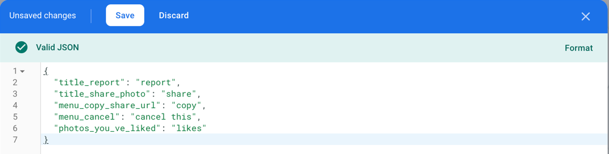
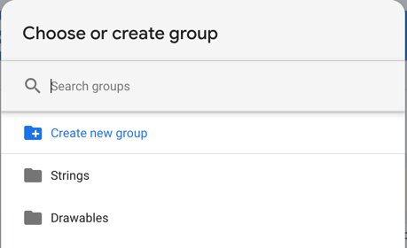
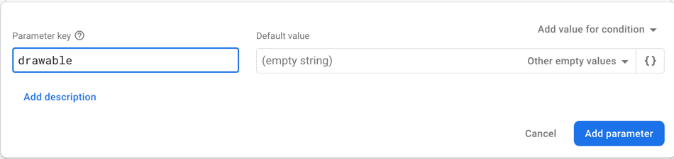
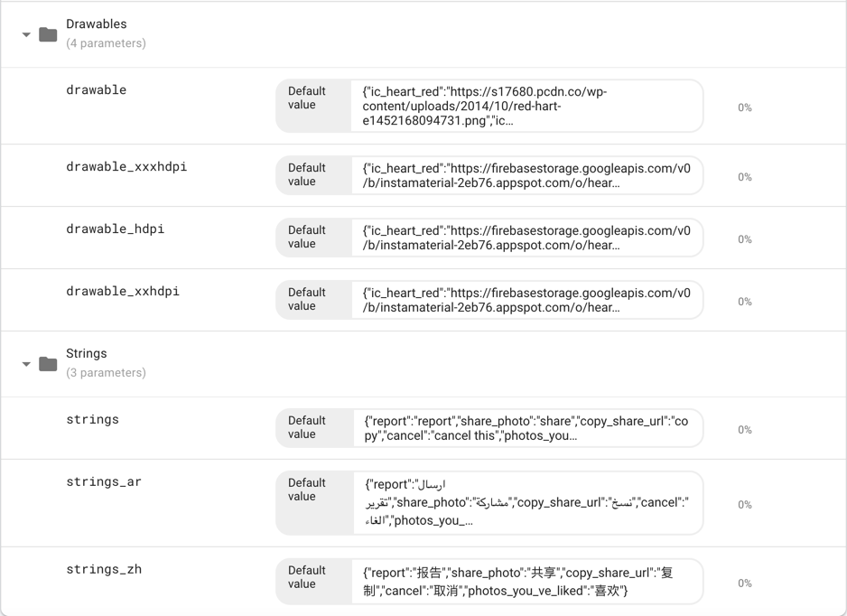
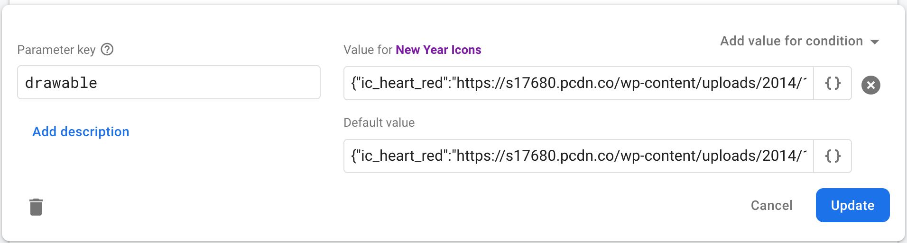
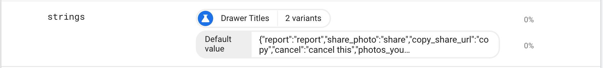

Table of contents:
Installation
Telereso depends on Firebase to
use Remote Config for resource management
And Cloud Messaging for realtime changes (optional)
All you need to get started is make sure your project has setup
firebase (check docs)
then just add Telereso dependency to your
project
Dependencies
| Approach | Instruction |
|---|---|
 |
// At your root build.gradle
allprojects {
repositories {
// add JitPack repository
maven { url 'https://jitpack.io' }
jcenter()
google()
}
}
// At your app build.gradle implementation "io.telereso:telereso:0.0.5-alpha" |
| (Kotlin DSL) |
// At your root build.gradle
allprojects {
repositories {
// add JitPack repository
maven { url 'https://jitpack.io' }
jcenter()
google()
}
}
// At your app build.gradle
implementation("io.telereso:telereso:0.0.5-alpha")
|
dependencies: telereso: ^0.0.7-alpha |
|
npm install telereso |
|
npm install telereso-web |
Samples & Examples
Nothing feels better than a snippet of code ready to be copied! Check samples in this repo
Firebase
This section will show how to set up firebase remote config to be used with Telereso
Strings
Steps
- Open Firebase console then select Remote Config Dashboard
-
Add new param called
strings
- Add a json containing key/value params representing your strings resource’s key name (same key name found in the
strings.xml), and it’s value
 - Add to
Stringsgroup (this is optional but good practice)
 - Save and publish
Localization
Telereso supports localization using
local after the strings prefix strings_<local>
To support other languages just add more params each containing a json with same keys (as in the strings version) but
with a translated value
ex: strings_fr,strings_ar...etc
Android developers it will be the same local you add to your values dir values-fr,values-ar...etc
Notice we are using _ instead of - due to remote config limitations
Drawable
Steps
- Open Firebase console then select Remote Config Dashboard
- Add new param called
drawable - Add a json containing key/value params representing your drawable resource’s key name (same key name found in the
drawable dir), and it’s value will be a url of your remote image
 - Add to
Drawablegroup (this is optional but good practice) - Save and publish
Android Screens support
To support multiple screens sizes for android add the same sizes used with drawable dirs
ex: drawable_hdpi,drawable_xhdpi
Notice we are using _ instead of - due to remote config limitations
Final Result

Conditional Resources
Remote Config provide conditions to be applied to your params (strings,drawables),
This will add another layer of dynamic delivery, so if you would like new versions to have specific resources,
or
segment of users that clicked a button,
Or strings and icons to be shown on specific days (Holidays 🎊🥳🎉!)…etc
You can see how Telereso will help avoid
multiple app releases.

A/B Testing
One of the great feature about Remote config is the out of the
box A/B testing
Since all our resources are indexed as params we could easily create experiments.
The following example show how we can test Drawer titles and see which one achieve higher conversion

This can be used for icons as well
Usage
There are different scenarios to work
with Telereso ,
Wither you are starting a fresh new application, or an already in production application with large code base
Android
Initialization
Initialization will not make api calls it just to set up resources,
If your app has a splash screen it would be a perfect place to do this, or on your custom application class
The init function has a call back you can listen to,
Or you could use the suspended version suspendedInit if you’re a coroutines’ lover!.
Skipping the Initialization will not cause crashes, but the app will not be able to use the remote version of the
resources,
So it is a way to disable remote functionality.
Application Start
```kotlin
class MyApplication : Application() {
override fun onCreate() {
super.onCreate()
Telereso.init(this)
}
}
``````java
public class MyApplication extends Application {
@Override
public void onCreate() {
super.onCreate();
Telereso.init(this);
}
}
``````dart
void main() {
runApp(const MyApp());
}
class MyApp extends StatelessWidget {
const MyApp({
Key key,
}) : super(key: key);
@override
Widget build(BuildContext context) {
Telereso.instance.init();
return MaterialApp();
}
}
``````kotlin
export default class App extends React.Component {
render() {
return (<AppContainer/>);
}
}
Telereso.init(i18n);
``````kotlin
import App from "./App";
import i18n from "./i18n";
import {Telereso} from "telereso-web";
import firebase from "firebase/app";
// Initialize Firebase
const firebaseConfig = {
apiKey: process.env.REACT_APP_FIREBASE_APIKEY,
authDomain: process.env.REACT_APP_FIREBASE_AUTH_DOMAIN,
projectId: process.env.REACT_APP_FIREBASE_PROJECT_ID,
storageBucket: process.env.REACT_APP_FIREBASE_STORAGE_BUCKET,
messagingSenderId: process.env.REACT_APP_FIREBASE_MESSAGING_SENDER_ID,
appId: process.env.REACT_APP_FIREBASE_APP_ID,
measurementId: process.env.REACT_APP_FIREBASE_MEASUREMENT_ID,
};
firebase.initializeApp(firebaseConfig);
Telereso.init(i18n,firebase);
ReactDOM.render(
<React.StrictMode>
<App/>
</React.StrictMode>,
document.getElementById('root')
);
```Splash Screen
```kotlin
class SplashActivity : Activity {
private override fun onCreate(savedInstanceState: Bundle?) {
super.onCreate(savedInstanceState);
Telereso.init(this) {
startActivity(Intent(this, MainActivity::class.java))
finish()
}
}
}
``````java
public class SplashActivity extends Activity {
@Override
protected void onCreate(Bundle savedInstanceState) {
super.onCreate(savedInstanceState);
Telereso.init(this, () -> {
startActivity(new Intent(this, MainActivity.class));
finish();
return null;
});
}
}
``````kotlin
import i18n from './i18n';
import { Telereso } from 'telereso';
export default class App extends React.Component {
state = {
splashFinished: false
}
constructor(props) {
super(props);
Telereso.suspendedInit(i18n).then(() => {
this.setState({
splashFinished: true
})
});
}
render() {
return (this.state.splashFinished ? <AppContainer /> : <Text>Loading...</Text>);
}
}
``````kotlin
import i18n from "./i18n";
import {Telereso} from "telereso-web";
import firebase from "firebase/app";
export default class App extends React.Component {
state = {
splashFinished: false
}
componentDidMount() {
Telereso.suspendedInit(i18n,firebase).then(() => {
this.setState({
splashFinished: true
})
});
}
render() {
return (this.state.splashFinished ? <Pricing/> : <label>Loading...</label>);
}
}
```Add RemoteViewInflater
This inflater will make sure all the android application views that display strings or images have the remote
functionality,
The inflater will detect if you’re setting the text in the xml directly like andriod:text=@stirngs/user_name
And use the remote version if it’s found or default back to the original value
The inflater handles the following views :
- TextView
- EditText
- ImageView
- Button
- ImageButton
- FloatingActionButton
- BottomNavigationView
- NavigationView
you can use the inflater with App Theme or Activity Theme
App Theme
If your activities Does not use their own custom theme , add RemoteViewInflater directly to the app theme as
the viewInflaterClass
<style name="AppTheme" parent="Theme.AppCompat.Light.NoActionBar">
<item name="colorPrimary">@color/style_color_primary</item>
<item name="colorPrimaryDark">@color/style_color_primary_dark</item>
<item name="colorAccent">@color/style_color_accent</item>
<item name="colorControlHighlight">@color/fab_color_pressed</item>
<item name="viewInflaterClass">io.telereso.android.RemoteViewInflater</item>
</style>
Activity Theme
if your activity uses a custom theme add RemoteViewInflater to that theme
<style name="AppTheme.TransparentActivity">
<item name="android:windowBackground">@android:color/transparent</item>
<item name="android:windowIsTranslucent">true</item>
<item name="viewInflaterClass">io.telereso.android.RemoteViewInflater</item>
</style>
Dynamic Resources
Sometimes we set the resrouces programmatically depending on a view state like so
title = getString(R.strings.title_home),
In this case we can use the Remote version of the function getString()
which is
getRemoteString()
This will make sure to use the remote version of the resource if found or default it to the original value
Strings
```kotlin
titleTextView.text = getRemoteString(R.strings.title_home)
``````java
titleTextView.setText(Telereso.getRemoteString(R.strings.title_home));
``````dart
Widget build(BuildContext context) {
return Text(
RemoteLocalizations.of(context).appTitle,
);
}
``````kotlin
export default class MyComponent extends React.Component {
render() {
return (
<View>
<Text>{i18n.t('title_home')}</Text>
</View>
);
}
}
``````kotlin
export default class MyComponent extends React.Component {
render() {
return (
<View>
<Label>{i18n.t('title_home')}</Lable>
</View>
);
}
}
```Drawables
```kotlin
imageView.setRemoteImageResource(R.id.icon)
``````java
Telereso.setRemoteImageResource(imageView,R.id.icon);
``````dart
Widget build(BuildContext context) {
return RemoteImage.asset("assets/icons/image.png");
}
``````kotlin
import RemoteImage from 'telereso';
export default class MyComponent extends React.Component {
render() {
return (
<View>
<RemoteImage source={require('../assets/icons/image.png')} />
</View>
);
}
}
``````kotlin
import RemoteImage from 'telereso-web';
import logo from "./assets/images/img.png";
export default class MyComponent extends React.Component {
render() {
return (
<RemoteImage src={logo} />
);
}
}
```Dynamic Resources || (out of the box)
If you have a large code base and have a lot of getString() and setImageResource,
And replacing them with a remote version is not an option,
You can override the activity’s context with a RemoteWrapperContext
That will take care of the changes for you without any code changes.
Important note if your app supports both portrait and land scape you need to handle the configuration changes
manually,
Later versions of Telereso will address
this issue
Add the following to all your activities or your BaseActivity
```kotlin
class MainActivity : Activity {
override fun attachBaseContext(newBase: Context) {
super.attachBaseContext(RemoteContextWrapper(newBase));
}
}
``````java
public class MainActivity extends Activity {
@Override
protected void attachBaseContext(Context newBase) {
super.attachBaseContext(new RemoteContextWrapper(newBase));
}
}
```Realtime Changes
Who doesn’t love to see changes happening in real time ?
Telereso support this optional
implantation with some extra steps.
We recommend enabling this while in development mode only
Cloud function
Create a cloud function to be triggered when updating remote config, you can follow this setup doc to do so,
PS: only follow the cloud function part
package.json
{
"name": "sample-firebase-remoteconfig",
"version": "0.0.1",
"dependencies": {
"firebase-admin": "^9.4.2",
"firebase-functions": "^3.13.1"
}
}
index.js
const functions = require('firebase-functions');
const admin = require('firebase-admin');
admin.initializeApp();
exports.pushConfig = functions.remoteConfig.onUpdate(versionMetadata => {
// Create FCM payload to send data message to PUSH_RC topic.
const payload = {
topic: "TELERESO_PUSH_RC",
data: {
"TELERESO_CONFIG_STATE": "STALE"
}
};
// Use the Admin SDK to send the ping via FCM.
return admin.messaging().send(payload).then(resp => {
console.log(resp);
return null;
});
});
Notice the topic : TELERESO_PUSH_RC and data TELERESO_CONFIG_STATE has to the same
Client
In your android project add th following code in your MyFirebaseMessagingService:
```kotlin
class MyFirebaseMessagingService: FirebaseMessagingService() {
override fun onNewToken(token: String) {
if (BuildConfig.DEBUG)
Telereso.subscriptToChanges()
}
override fun onMessageReceived(remoteMessage:RemoteMessage) {
if (BuildConfig.DEBUG && Telereso.handleRemoteMessage(getApplicationContext(), remoteMessage)) return
// your logic
}
}
``````java
public class MyFirebaseMessagingService extends FirebaseMessagingService {
@Override
public void onNewToken(String token) {
if (BuildConfig.DEBUG)
Telereso.subscriptToChanges();
}
@Override
public void onMessageReceived(@NonNull RemoteMessage remoteMessage) {
if (BuildConfig.DEBUG && Telereso.handleRemoteMessage(getApplicationContext(), remoteMessage))
return;
// your logic
}
}
``````dart
class _HomePageState extends RemoteState<_HomePage> {
final FirebaseMessaging _firebaseMessaging = FirebaseMessaging();
static Future<dynamic> myBackgroundMessageHandler(
Map<String, dynamic> message) async {
// put your normal logic
}
@override
void initState() {
super.initState();
_firebaseMessaging.configure(
onMessage: (message) async {
if (await Telereso.instance.handleRemoteMessage(message)) return;
// put your normal logic
},
onBackgroundMessage: myBackgroundMessageHandler,
onLaunch: (message) async {},
onResume: (message) async {},
);
Telereso.instance.subscribeToChanges();
}
}
``````kotlin
import RemoteComponent from 'telereso';
export default class MyComponent extends RemoteComponent {
render() {
return (
<View>
<Text>{i18n.t('title_home')}</Text>
</View>
);
}
}
```Flutter
Telereso API
Here are tables to help you use the library.
Kotlin
| Function | Description |
|---|---|
init(Context,finishCallback) |
setup resources to be used,finishCallback will be called as soon resources are ready, also will fetchAndActivate Remote config but will not block the init (finishCallback will be called before the fetch finishes) |
suspendedInit(Context,finishCallback) |
used inside other suspended functions or coroutines, it will fetchAndActivate Remote config then setup resources) |
Context.getRemoteString(R.string.<string_id>) |
return remote string or original value |
View.getRemoteString(R.string.<string_id>) |
return remote string or original value |
View.getRemoteString(R.string.<string_id>) |
return remote string or original value |
ImageView.setRemoteImageResource(R.string.<res_id>) |
set remote image resource or the original value |
Java
| Function | Description |
|---|---|
Telereso.init(Context,finishCallback) |
setup resources to be used,finishCallback will be called as soon resources are ready, also will fetchAndActivate Remote config but will not block the init (finishCallback will be called before the fetch finishes) |
Telereso.getRemoteString(Context, R.string.<string_id>) |
return remote string or original value |
Teleresoset.getRemoteImageResource(ImageView,R.string.<res_id>) |
set remote image resource or the original value |
Getting Help
To report bugs, please use the GitHub project.
- Project Page: https://github.com/telereso/telereso
- Reporting Bugs: https://github.com/telereso/telereso/issues